A native Spotify client for iOS 5 and 6 on iPhone, iPod touch and iPad, based on riff by Second Track. It runs entirely on the device. Spotify Premium is required.
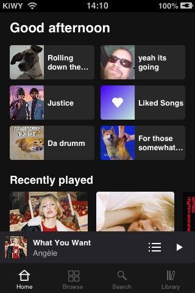
Home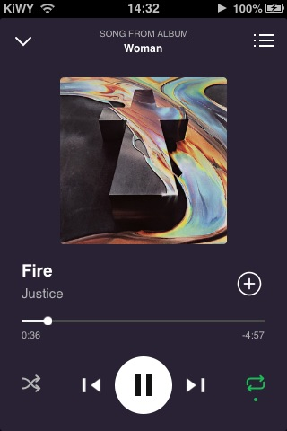
Now playing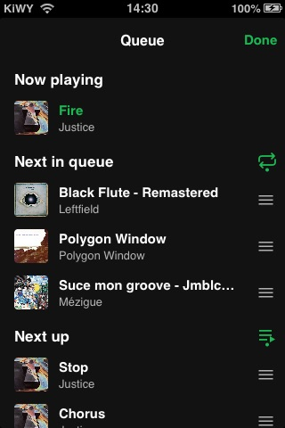
Queue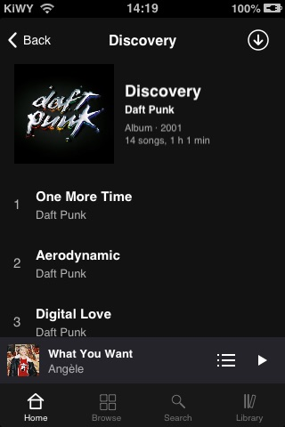
Album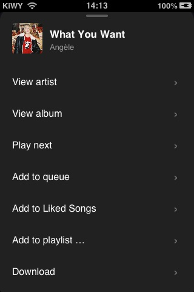
Song menu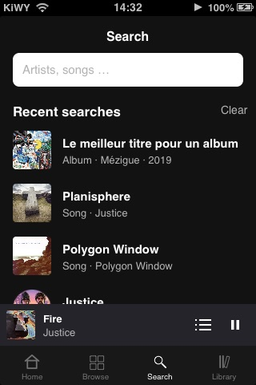
Search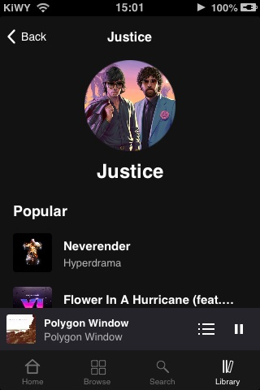
Artist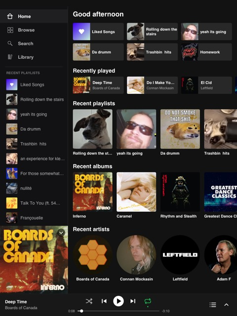
Home (portrait)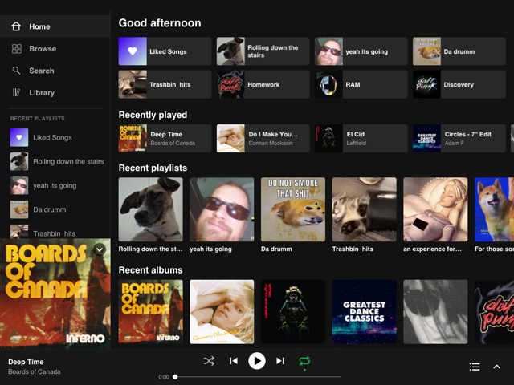
Home (landscape)Now playing (portrait)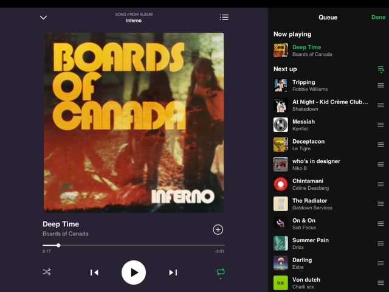
Now playing with queue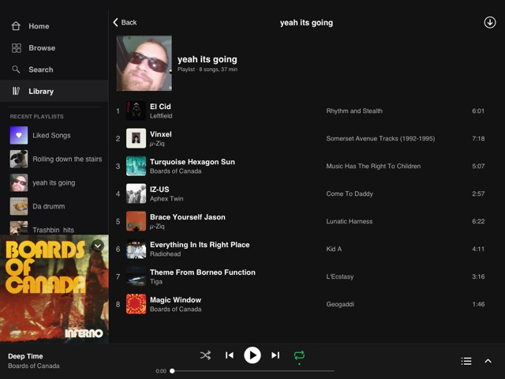
Playlist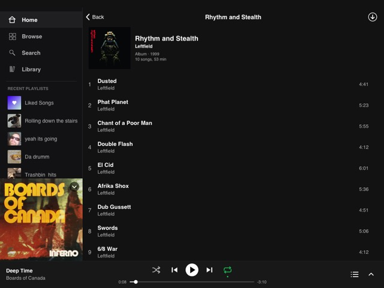
AlbumSpotify6 installs as a normal App Store style app (it needs AppSync Unified). Updating keeps your login and downloads. Removing the package also removes the app and its data.